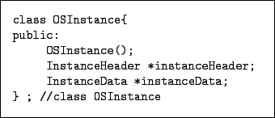
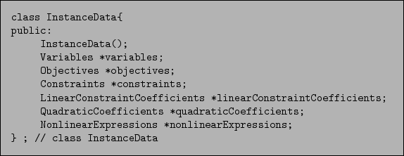
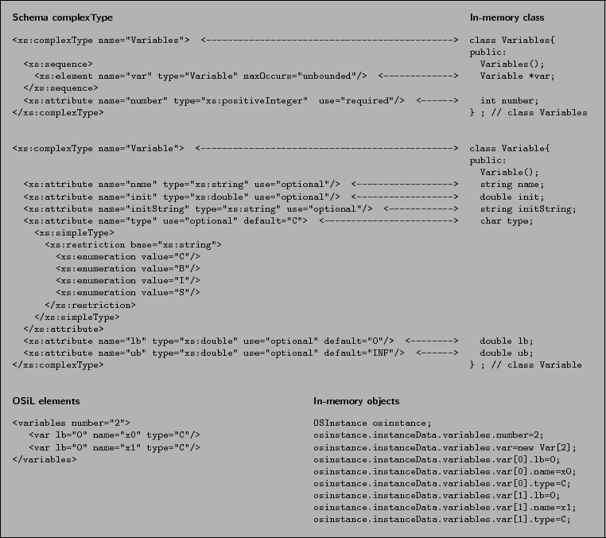

Next: The OSExpressionTree OSnLNode Classes
Up: OSCommonInterfaces
Previous: Creating an OSInstance Object
Contents
The OSInstance class has two member classes, InstanceHeader and InstanceData. These correspond to the OSiL schema's complexTypes InstanceHeader and InstanceData, and to the XML elements <instanceHeader> and <instanceData>.
Moving down one level, Figure 12 shows that the InstanceData class has in turn the member classes Variables, Objectives, Constraints, LinearConstraintCoefficients, QuadraticCoefficients, and NonlinearExpressions, corresponding to the respective elements in the OSiL schema with the same name.
Figure 11:
The OSInstance class
|  |
Figure 12:
The InstanceData class
|  |
Figure 13:
The <variables> element as an OSInstance object
|  |
Figure 13 uses the Variables class to provide a closer look at the correspondence between schema and class. On the right, the Variables class contains a number data member and a sequence of var objects of class Variable. The Variable class has lb (double), ub (double), name (string), init (double), and type (char) data members. On the left the corresponding XML complexTypes are shown, with arrows indicating the correspondences. The following rules describe the mapping between the OSiL schema and the OSInstance class.
-
- Each complexType in an OSiL schema corresponds to a class in OSInstance. Thus the OSiL schema's complexType Variable corresponds to OSInstance's class Variable. Elements in an actual XML file then correspond to objects in OSInstance; for example, the <var> element that is of type Variable in an OSiL file corresponds to a var object in class Variable of OSInstance.
-
- An attribute or element used in the definition of a complexType is a member of the corresponding OSInstance class, and the type of the attribute or element matches the type of the member. In Figure 13, for example, lb is an attribute of the OSiL complexType named Variable, and lb is a member of the OSInstance class Variable; both have type double. Similarly, var is an element in the definition of the OSiL complexType named Variables, and var is a member of the OSInstance class Variables; the var element has type Variable and the var member is a Variable object.
-
- A schema sequence corresponds to an array. For example, in Figure 13 the complexType Variables has a sequence of <var> elements that are of type Variable, and the corresponding Variables class has a member that is an array of type Variable.
General nonlinear terms are stored in the data structure as OSExpressionTree objects, which are the subject of the next section.
The OSInstance class has a collection of get() , set(), and calculate() methods that act as an API for the optimization instance and described in Section 8.
Next: The OSExpressionTree OSnLNode Classes
Up: OSCommonInterfaces
Previous: Creating an OSInstance Object
Contents
Kipp Martin
2008-01-16